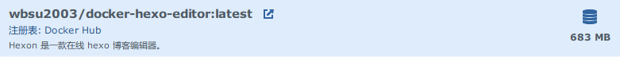
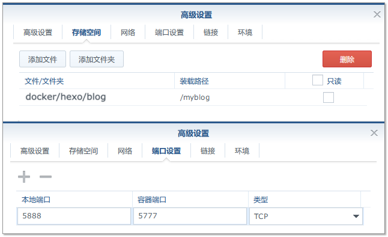
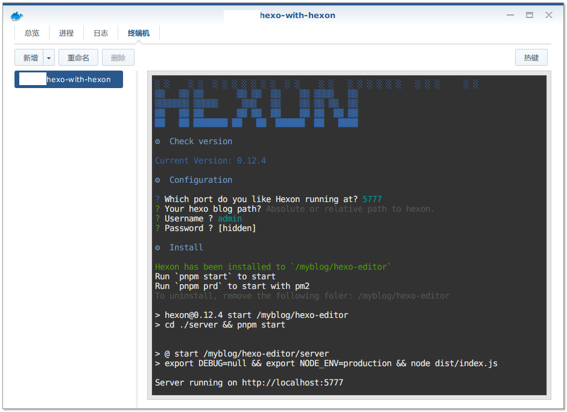
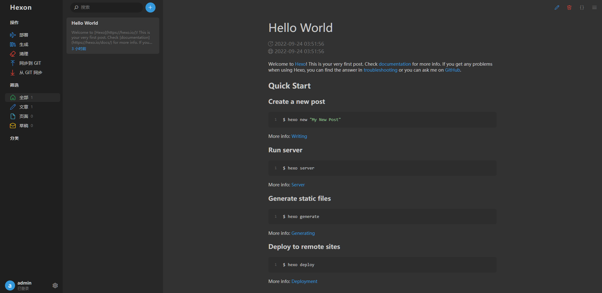

支持在线可视化编辑的 Hexon（替代 Hexo-Admin）
支持在线可视化编辑的 Hexon（替代 hexo-admin）。
什么是 Hexon ？[^laosu-hexon] [^laosu-hexon-upgrade]
Hexon是一款在线hexo博客编辑器，在 0.6 版本之前叫winwin-hexo-editor。最新的Hexon源代码 v0.12.4（23 Jun 2022）。
Hexon 的界面 比 hexo-admin 好看多了，功能排布也更合理，先上一张图感受下 ：

[^laosu-hexon]: 支持在线可视化编辑的Hexon–laosu.ml | @achive.org
[^laosu-hexon-upgrade]: 给Hexon升了个级 | @achive.org
构建镜像及安装设置 Hexon
切记！！！
winwin-hexo-editor只是hexo博客的编辑器，所以在部署前需确保hexo博客可用。如果您还不知道怎么部署，请参考老苏的上一篇文章『 在群晖上复刻公网的Hexo 』| @achive.org
TL;DR 关键设置
没有找到 (感谢 老苏 。)Hexon 或者 winwin-hexo-editor 的镜像，所以这次我们准备自己来构建。
创建容器过程中的设置。

群晖 启动 容器 进行设置 。 （进入「终端机」进行设置。）

详细设置 与 构建镜像
注册表搜索
wbsu2003/docker-hexo-editor2022.09.24更新 ， v2 版构建构基于
Hexon；创建容器
其中
/volume2/docker/hexo/blog是已经安装好的hexo的根目录，不了解的看看上一篇『 在群晖上复刻公网的Hexo 』或者 命令行安装
如果你熟悉命令行，可能用 docker cli 更快捷
1
2
3
4
5
6
7
8
9
10
11
12
13新建文件夹 hexo 和 子目录
mkdir -p /volume2/docker/hexo/blog
进入 hexo 目录
cd /volume2/docker/hexo
运行容器
docker run -d \
--name hexon \
-p 5888:5777 \
-e HEXO_EDIT_PORT=5888 \
-v $(pwd)/blog:/myblog \
wbsu2003/docker-hexo-editor:latest
Hexon 基础设置
在访问之前，我们还要完成相关的设置，包括 Hexon 账号和密码等
群晖 启动 容器 进行设置 。 （进入「终端机」进行设置。）
设置完成后，需要重启一次容器，否则可能还是不能登录的 。
命令行方式
1
2
3
4
5
6
7
8
9
10
11进入容器
docker exec --user root -it hexon /bin/bash
进入 server 目录
cd hexo-editor/server/
设置
pnpm run setup
退出容器
exit
运行
在浏览器中输入 http://diskstation:5888 就能看到登录界面
用前面设置的账号密码登录

Dockerfile 如下👇
1 | FROM node:lts-slim |
构建镜像和容器运行的基本命令如下👇
1 | 新建文件夹 hexon |
Hexon 的一些细节[^Jabri-Hexon-deploy-script] [^laosu-hexon-upgrade]
系统参数 及 密码重置
系统参数 保存在
/docker/hexo/blog/hexo-editor/server/data/common.db文件 （相对路径：<docker>/hexo-editor/server/data/common.db）
密码是经过处理的

可以通过下面的命令重装密码
1 | 重置密码 |
操作说明
新建文章
| 简单模式 | 高级模式 |
|---|---|
 |
 |
在 source/_posts 路径下创建一个在测试文件夹下的 文件名为测试，标题为测试的文章 ， 创建后的文件路径: [blog root]/source/_posts/测试/测试。 |
|
显然 path 是包含了文件名的，在默认路径下，path 等于文件名 |
部署脚本
这是针对左上角菜单的 「部署」动作。
需要进入容器内设置
1 | 进入容器 |

| 可以直接创建脚本文件 | 也可以直接输入脚本 |
|---|---|
 在脚本文件中写脚本  |
 |
以上内容保存在 /docker/hexo/blog/hexo-editor/server/data/database.json 文件中。
所以我觉得你应该发现了更简单的方法 。

[^Jabri-Hexon-deploy-script]: Hexon一款有趣的Hexo在线编辑器 | Jabari | @achive.org